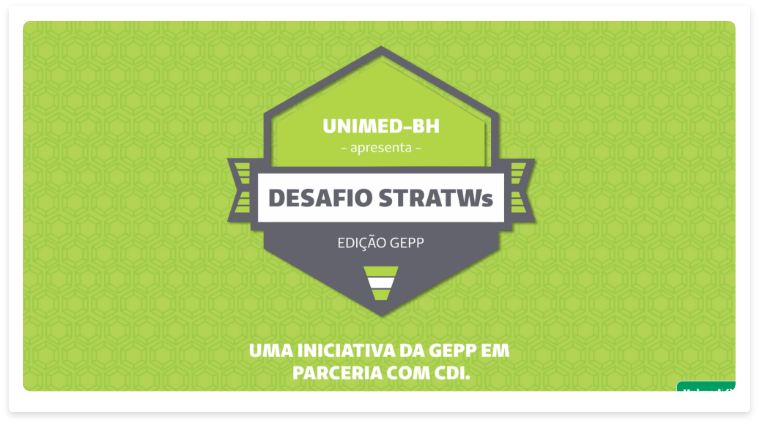

Dinâmica envolvendo colaboradores para engakjamento do Stratws
A Unimed Belo Horizonte contratou o Stratws para ser seu sistema de Gestão Estratégica. O sistema foi implantado e os funcionários receberam o treinamento contratado pela Siteware.
Mesmo com o treinamento é preciso engajar os funcionários mostrando o valor da ferramenta em seu dia-a-dia. Também e necessário mostrar todo potencial para que os colaboradores possam retirar o melhor do investimento feito pela Unimed.
Engajar os colaboradores da Unimed na nova ferramenta contratada. Demonstrar tudo que ela pode fazer para facilitar o dia-a-dia. Tornar mais produtiva e eficaz as atividades realizadas por eles.
A Unimed criou um programa para instigar os colaboradores a utilizar o sistema. Uma dinâmica em formato de desafio entre equipes. Foram dadas missões para as equipes e durante elas eram ministrados workshops.
Cada equipe era responsável pelo lançamento de um produto fictício de uma grande empresa criada por eles. As tarefas tinham que ser realizadas dentro do sistema, explorando todas as funcionalidades que ele fornecia.
No fim a equipe ganharadora era premiada e se tornava responsável em disseminar o aprendizado para outras áreas.
Trabalhei como facilitador, ajundando as equipes a realizarem suas tarefas, tirando dúvidas sobre o sistema. Também participei da criação das atividades que seriam executadas durante o desafio e avaliei as ativadades pontuando aquelas que tiveram um melhor desempenho.
As pessoas gostam de interação e colaboração. A dinânica fez com que as pessoas da equipe ficassem mais próximas até mesmo em tarefas que não envolvia o desafio. Houve grande repercusão em outras áreas e todos os envolvidos se sentiram mais confiantes para usar e disseminar informações sobre o sistema.
Foi percebido também que aqueles que participaram do desafio conseguiram enxergar oportunidades de incluir no sistema outras tarefas que na época não faziam parte do sistema. Contribuindo para tornar a rotina da área mais eficaz.